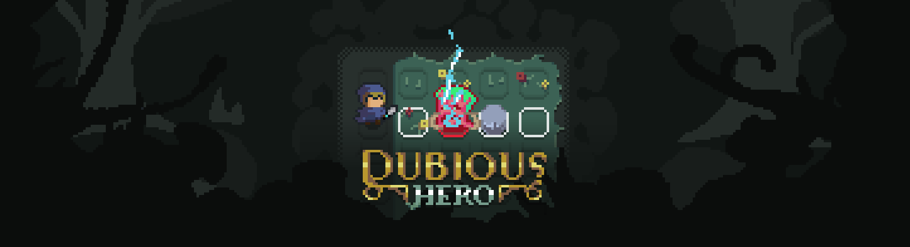

Desenvolvedor Unity e especialista em Realidade Virtual (VR) com bacharelado em Tecnologia da Informação e especialização em Jogos Digitais (UFRN). Experiência comprovada na engenharia e entrega de experiências imersivas de alto impacto, atuando ativamente no desenvolvimento de projetos como DjembeFola e Germinarium. Competência técnica no ciclo completo de desenvolvimento, integrando lógica de programação avançada em C# com design visual e prototipagem multiplataforma utilizando Figma, Illustrator e Premiere Pro. Profissional orientado a resultados, focado na otimização de performance, arquitetura de software e resolução de problemas complexos em ambientes virtuais interativos. Unity Developer and Virtual Reality (VR) specialist with a Bachelor's degree in Information Technology and a minor in Digital Games (UFRN). Proven experience in engineering and delivering high-impact immersive experiences, actively participating in the development of projects such as DjembeFola and Germinarium. Technical competence in the full development cycle, integrating advanced C# programming logic with visual design and cross-platform prototyping using Figma, Illustrator, and Premiere Pro. Results-oriented professional focused on performance optimization, software architecture, and solving complex problems in interactive virtual environments.
Otimização de algoritmo de movimentação de boids e reestruturação de fluxo lógico, viabilizando o port para Realidade Virtual e multiplayer online em um ciclo ágil de 5 meses. Optimization of boids movement algorithm and logic flow restructuring, enabling the port to Virtual Reality and online multiplayer in an agile 5-month cycle.
Desenvolvimento de level design para menu interativo, programação de mecânicas de puzzles e transições de cena para elevar a coesão narrativa e a UX do usuário final. Development of level design for an interactive menu, programming of puzzle mechanics, and scene transitions to elevate narrative cohesion and final user UX.
Modelagem 3D de ativos biológicos para o projeto Barragem Gargalheiras, contribuindo para a alta fidelidade visual e imersão do ecossistema virtual. 3D modeling of biological assets for the Barragem Gargalheiras project, contributing to high visual fidelity and immersion of the virtual ecosystem.
Modelagem 3D de inimigos humanoides e elementos de cenário, criação do game design e do level design, dando forma ao projeto. 3D modeling of humanoid enemies and scenario elements, creation of game design and level design, shaping the core project.
Criação de sprites de personagem e artes de início, auxílio no processo de Game Design e experiência em trabalhos a curto-prazo. Creation of character sprites and start art, assisting in the Game Design process and gaining experience in short-term deliverables.

Criação do Game Design e programação do fluxo principal do jogo, formulando a base do projeto. Creation of the Game Design and programming of the main game flow, formulating the foundation of the project.